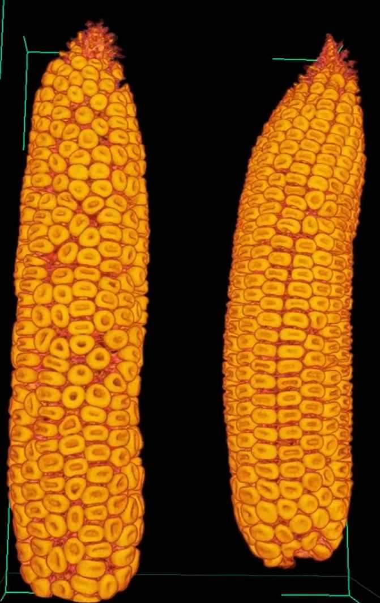

Social Science Data Analytics Initiative (SSDA) contributed workshops.
- Wrangling and Presenting Data with Pandas and Seaborn in Python.
- Narrating our data with RMarkdown
Pandas is one of the most popular python libraries to read, wrangle, and write data, which is also seamlessly integrated with seaborn when it comes to data visualization. Seaborn is an easy way to make pretty box plots, bar codes, and linear regressions, This will be a hands-on workshop consisting of both theory and practice parts. We will first walk through quickly through the general philosophy behind pandas, and later see how that philosophy is translated in multiple wrangling commands. Understanding the way pandas is designed will make parsing through its documentation easier. Whenever walking through pandas most common commands, a R translation will be provided for those already familiar with R but unfamiliar with pandas. All the material available here.
RMarkdown is a very slick way to present data and its analysis. By writing a markdown file, which is a pure text file easily handled with RStudio, one can create webpages and PDF documents. Things can get much more interactive. One can mix literate text with R code in a very legible way, which makes showcasing data and results much more attractive than simply running a script and reading inline comments. We don't need to copy-paste plots and numbers from RStudio to our final presentation: these will be made on the fly on our report/presentation. Despite its name, it also supports python, and it even allows R and python to exchange information in the same presentation!

Slides. All the material available in my github.
Xray CT scan of scarlet emperor mandarins

Observing apple vasculature

Couple of corn ears
Interior of a corn ear
Agave crossed with Manfreda

A cavernous bell pepper!

Quoting Dan C: "Everytime you see a cactus, you should feel awe."
Spiraling with haworthia